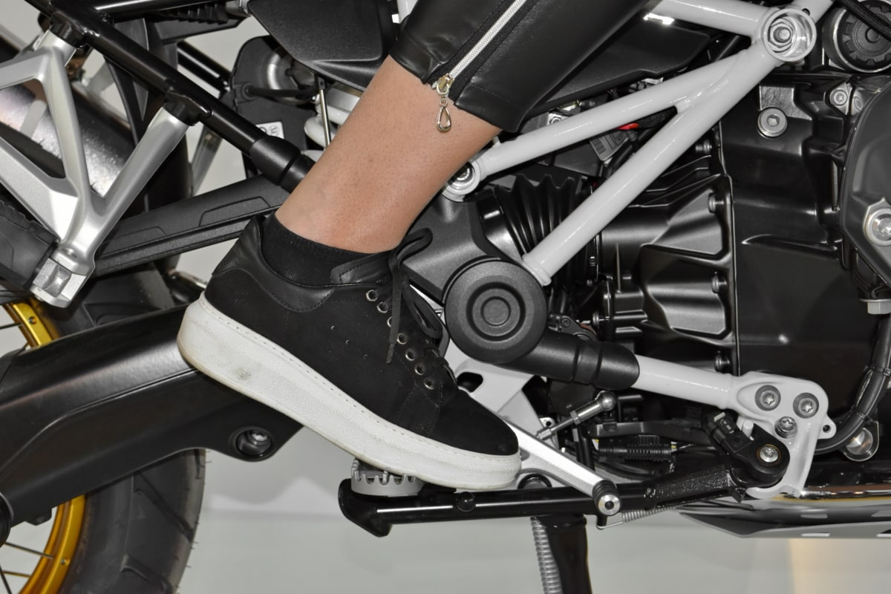
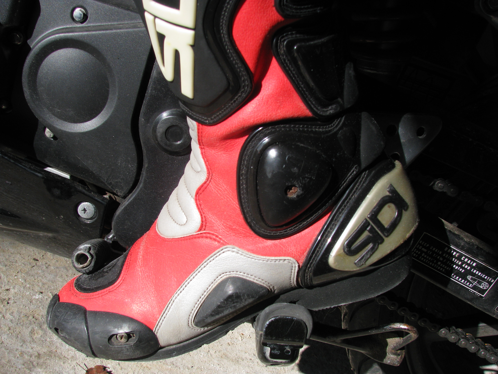
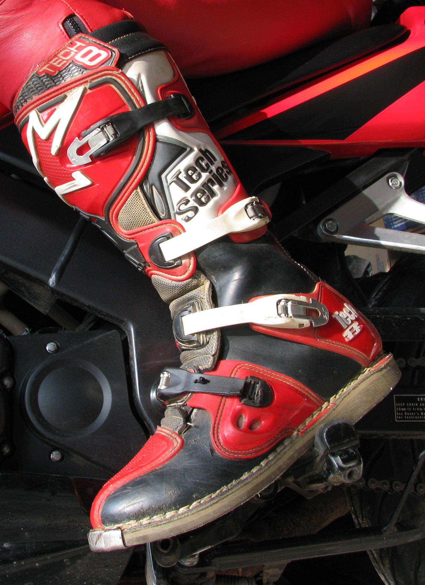

檔車很帥沒錯，這也是許多人入坑的原因，但是對沒接觸過的新手來說，真的很頭痛！
以下盤點許多關於檔車新手會有的疑問...
# 注意
本文內容主要為個人理解，若有錯誤請聯繫告知，感謝。
# 速克達 與 打檔機車 的差別
- Scooter (速克達)
台灣常見的機車多半為下圖的樣式，這也是大多數台灣人聽到「機車」後會想到的樣子，該機車類型被稱作「 Scooter (速克達) 」又或者叫做「 塑膠車 」，港澳地區則稱之為「 綿羊仔 」。
「在二十世紀初有存在，此後二次大戰後由義大利偉士牌帶動流行起來的交通工具，是摩托車的一種。」 - Wiki 維基百科
 機車")
- Motorcycle (檔車)
檔車才是一般大家所指的「 Motorcycle 」。
與 Scooter (速克達) 最主要的差別在於「需要手動更換檔位變速 (速克達為機器自動更換)」，且速克達是以皮帶傳動，檔車則是以鏈條傳動。
")
 |  |
# 煞車？離合器？打檔桿？
許多人搞不清楚「離合器」到底是什麼。離合器 (Clutch) 主要功能是用來控制將引擎動力傳遞至車軸的裝置，舉例機車的離合器來說，一般路上常見的速克達離合器是自動化讓車輛自行控制 ，因此非常的方便，你只需要催油門就可以讓機車前進。
但是檔車就不同了，因為檔車的離合器是手動控制的，因此檔車比起速克達多了一個「離合器控制的開關」，而這個開關通常就是設計在左邊手把前拉桿 ，相當於是速克達的後煞車位置 (左煞) ，那檔車的後煞車跑去哪了？
檔車後煞車則是被改到了車體右方腳踏桿 ，也就是說所有的煞車都在車體右方 ，用右手、右腳去控制前煞車、後煞車。而左腳位置則是「 打檔桿 」，顧名思義就是配合左手的離合器用來更換檔位用的。
檔車: 左手離合器
檔車：右腳後煞車

檔車：左腳打檔桿 升檔 (勾)

檔車：左腳打檔桿 降檔 (踩)

# 離合器 與 發動機
了解了以上檔車的基本控制項後，就可以來開始講解離合器的作用原理，以下附上我精湛的畫技下產出的圖文講解。

當車子還未發動時，所有零件都處於靜止狀態 (會自己動你就要擔心了)，車子一檔發動後，此刻發動機開始轉動，但離合器還是按壓狀態 ，就會形成最左邊那張分離狀態的圖 ，發動機 (褐色) 雖然在運轉，但因為離合器 (灰色) 還沒與其接合，所以離合器目前尚未開始運轉。
當慢慢鬆開離合器直到與發動機部份接合時，則會形成中間那張 "半離合" 狀態的圖 ，此刻機車也因為離合器與發動機開始有了銜接，會開始慢慢往前移動，半離合的目的是要「 "慢慢的" 帶動離合器去適應發動機的轉速 」。如果在轉速靜止的狀態下，直接使離合器與發動機快速銜接 (離合器放太快)，跳過 "半離合" 狀態，基本上會直接熄火 ，這也是大多數騎檔車的人會遇到的問題之一！因為運動定律的關係，運動中的發動機無法直接帶動靜止的離合器 ，會導致轉速差太多而讓發動機卡住，進而停止運作。
當在半離合狀態時，正常來說機車會開始慢慢向前移動，這時候離合器開始跟發動機的轉速做磨合，當本身有一定的轉速後，這時釋放離合器，形成最右邊那張 "密合" 狀態的圖時，此刻發動機則會自然的帶動離合器開始運轉，起步成功！
以下是網路上其他大大分享的圖。（圖取自此網站）
將離合器接上引擎以取得動力。


# 打檔｜大齒輪 與 小齒輪
在介紹打檔之前呢，必須要先說「 檔 」是用來幹麻的？
前面說到，打檔機車不像速克達的傳動方式，速克達採用的是 " 皮帶 " 死死拖著輪軸跑的方式前進，而打檔機車則是的使用 " 鏈條 "。鏈條兩邊連接齒輪，位於後輪輪軸那邊的齒輪大小是固定的 ，我們改變的是另一端離合器那邊的齒輪大小 ，檔位越小齒輪越小 ，檔位越大則齒輪越大。
說到這邊應該很多人會聯想到腳踏車...
沒錯，基本上打檔機車換檔跟腳踏車換檔原理是一樣的 (只是腳踏車是更改後方齒輪)。
兩個齒輪之間透過鏈條運作，當機車以「一檔」在工作時 (剛剛說的檔位越小齒輪越小)，是以離合器的小齒輪帶動後方輪軸的齒輪 ，所以此刻是「 小齒輪帶大齒輪 」的狀況，說到這裡回想一下國小的物理課，當「小齒輪帶大齒輪」的情況下，小的齒輪轉一圈，帶動後方的齒輪可能只有 3 分之 1 圈 ，但同時也比較輕鬆 ，適合用在起步。而當行進中轉速夠快，已經快要在該檔位的極限時 (轉速高的狀態)，此時若是想要繼續提速，則需要做「 升檔 」的動作。
檔位升高，齒輪變大，逐漸變成「 大齒輪帶小齒輪 」的狀況，此刻就是大的齒輪轉一圈，帶動後方齒輪可能一圈半 ，處於帶動速度快 ，但力量要求較大 ，因此不適合使用高檔位起步 ，容易因為力量要求過大 ，扭力不夠的關係而熄火。而行徑中可以切換高檔位則是因為本身已經有一定的速度 ，所以力量要求較大這點就可以被彌補。
而「降檔」基本上就是相反，用來減速，或者需要扭力大的場合 (例如：起步、爬坡)，若新手不熟練也可以待車子停下後，在原地做降檔動作 (停下降檔是為了下一次起步的準備，剛剛說了起步適合用高扭力的低檔位)。
※ 以下「回油」指「收油門」，「補油」指「催油門」。
升檔基本上操作為：
回油 => 壓離合 => 升檔 => 半離合 => 放離合
- 為什麼要先
回油？
- 這是為了讓轉速下降 ，以免換檔時轉速差太大。
例如一檔升二檔來說，應該是以一檔高轉接二檔低轉 ，所以需要收油門來使轉速降低，也就是說這個回油是「為了下個檔位而準備」的。
若維持一樣的轉速升檔，則會變成一檔高轉接二檔高轉 ，不僅會爆衝較危險以外，車體本身也會有明顯的頓挫，騎久了也很不舒服。- 機車已經有足夠的動能了，還需要
半離合嗎？
- 其實正確來說整體動作是一瞬間的，從
回油到放離合完成升檔的過程只需要 0.5 秒！(如果可以盡量避免半離合時間過長，這會磨損離合器片)
降檔基本上操作為：
中高速行徑中： 回油 => 壓離合 => 降檔 => 半離合 => 補油 => 放離合
低速行徑中： 回油 => 壓離合 => 降檔 => 半離合 => 放離合
- 為什麼中高速行徑的情況下要
補油？
- 這是因為在高檔位且具有一定的行徑速度時，後輪運轉速度快 ，若是維持一樣的轉速
降檔，會造成後輪與發動機轉速差大 (後輪快，發動機慢)。(退檔時避免轉速差大而補油，就是常聽見的「退檔補油」)
舉例二檔降一檔 ，應該是以二檔中低轉接一檔中高轉 ，若是沒有在降檔後補油，則會變成二檔中低轉接一檔中低轉 ，行徑間，後輪速度還維持在二檔 ，卻突然降回一檔，離合器與發動機轉速差大 ，卡住了離合器 ，透過鏈條間接阻擋了後輪的運轉 ，除了會感覺到明顯的頓挫感外，嚴重可能會導致後輪鎖死、打滑。(此指的轉速差所造成的煞車稱為「檔煞」)- 但若是在低速的情況下則可以省略補油的動作，維持原速即可。
- 若是要將機車停下，也可以在完全停止後才做降檔的動作。
- 為何不直接省略
回油，退檔後補更多的油不就好了？
- 當
壓離合的時候，離合器與發動機的動能是分離的，若是固定一樣的油門，在分離的一瞬間轉速會飆高 ，當然你可以在退檔後做退檔補油來配合轉速，但這不但較傷車 ，也更容易發生因轉速配合不當而產生的轉速差意外。
- 另外，與升檔一樣，降檔的動作從
回油到放離合的過程是一瞬間的。
# 檔位模式
懂了上述的原理後，來看看市面上的打檔模式吧。
基本上檔車打檔模式分為兩種 —「 循環檔 」、「 國際檔 」。
※ 以下都以 5 檔車來解說。
「 循環檔 」的檔位為迴圈式的：N > 1 > 2 > 3 > 4 > 5 > N > 1 > 2 ...
- 欸？數字的部份大家應該都了解了，那「 N 」是什麼意思？
- N 就是「 空檔 」，空檔的時候，不管怎麼摧油門車子都是不會動的 ，此刻的離合器齒輪與發動機齒輪是斷開的。基本用在要停車的時候。
目前大多打檔機車為「 國際檔 」：1 > N > 2 > 3 > 4 > 5
這種設計可以清楚看到，並不像循環檔一樣有個迴圈。
有別於循環檔的地方還有，空檔是在 1 檔跟 2 檔「 中間 」，進空檔的方法則為「 小力踩 」或「 小力勾 」。
以下是網路上其他大大分享的圖，看了相信會更明白的。（圖取自此網站）


# 珍奶跟雞排要放哪？
這也是檔車的一大痛點，因為檔車構造的緣故，大多數檔車是「 沒有車廂 」的！
有些檔車雖然有提供置物箱，但容量嘛... 大約只能放的下手機，若想加大空間，可以考慮加裝「 漢堡包 」或「 側掛包 」，攜帶的物品不多的話，也可以自己背個隨身背包上路。
(P.S. 側掛包有個小缺點 — 後座在上下車比較麻煩)
# 結語
以上是我個人對於打檔機車的認知及觀念講解，若有錯誤請不吝嗇私訊通知。
當然還有很多細節沒有提到，真的有興趣的朋友請再自行研究，我就不在此多做贅述。
另外我必須要說一件我個人覺得非常重要的心態：
機車、汽車都一樣，別想說會駕駛就好，不必管原理。
當你騎乘一個時速可達 100 公里的機械在路上奔馳，而你對它的構造渾然不知時，這不是件很恐怖的事情嗎...?
這篇文章如果有幫助你更認識打檔機車的話，也別忘記分享給你身邊喜愛檔車的朋友吧！